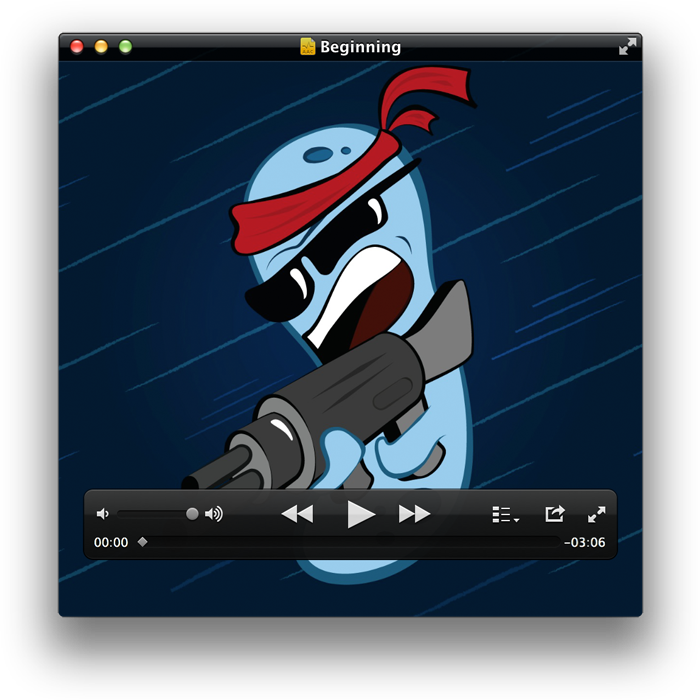
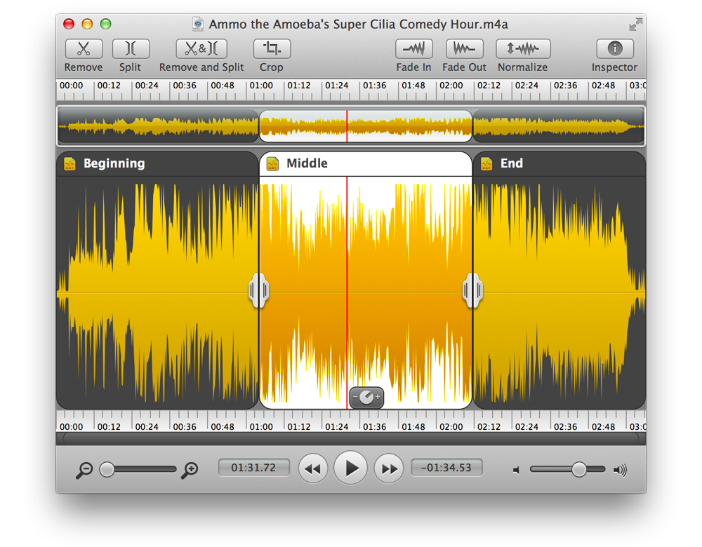
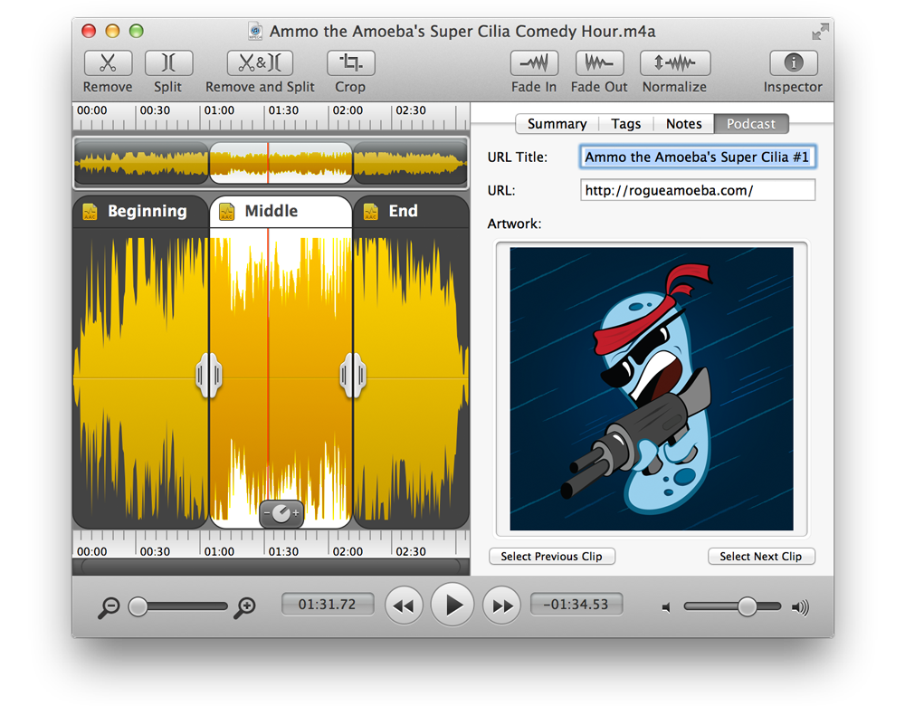

Making Chapterized AAC Files
A chapterized AAC file is an AAC file which contains distinct sections called chapters. These chapters break a file up into multiple parts for improved navigation. Each chapter can contain its own artwork as well as a URL pointing anywhere on the web.
Chapterized AAC files are often used by podcasters creating enhanced podcasts. They're great for allowing listeners to jump to a specific section, and additional information can be shared via the chapter's corresponding URL.

A Chapterized AAC file in QuickTime Player
With Fission, creating a chapterized AAC file is easier than it's ever been before. To get started, take any audio file, and add split points between each chapter you'd like to create.

This file will produce three distinct chapters, one for each clip.
Next, you'll edit the metadata for each chapter. Click the first chapter, then edit its title in the Tags tab. In the Podcasts tab, you can adjust the URL Title, URL, and artwork if desired. Do this for each chapter, until you've got all the relevant information entered.

Edit metadata in the Inspector's Podcast tab
Once this is set, just select Save As Chapterized AAC from the File menu. Fission will save the file out as a chapterized AAC file, ready for use with your podcast or anywhere else.
Note: If you're editing a file not already in the AAC format, Fission will automatically transcode it to 128 kbps 44.1 kHz AAC.